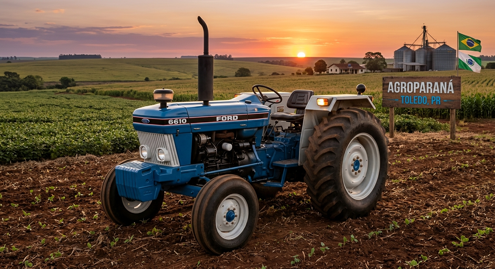
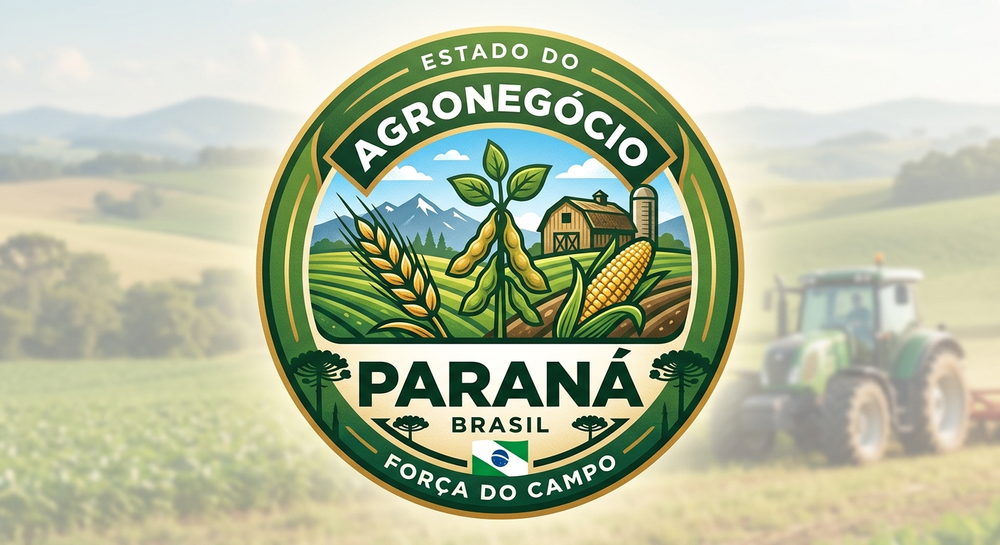

SUL
Por: Higor Schimit
O Agro no sul, vem sendo muito dificil pois, com esse super El ninõ, está tendo muitas chuvas
A DIFICULDADE DO AGRO NO SUL

Por: Higor Schimit
O agronegócio na Região Sul destaca-se pela alta produtividade e forte cooperativismo, embora enfrente o desafio de alertas climáticos severos. A produção regional concentra-se na liderança de soja no Paraná, na produção de arroz no Rio Grande do Sul e na avicultura, suinocultura e fruticultura em Santa Catarina.

Por: Higor Schimit
O Agro no sul, vem sendo muito dificil pois, com esse super El ninõ, está tendo muitas chuvas